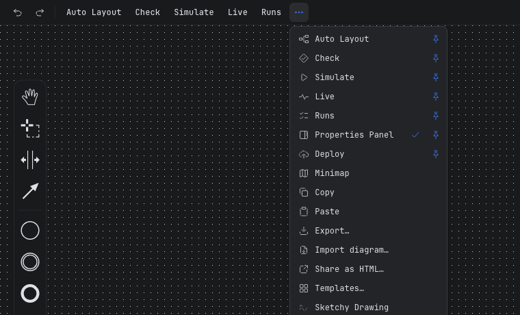

Guide / Editors
The toolbar and the More menu
The toolbar holds the actions you use most, the More menu holds all of them, and you choose which ones sit on the bar.
How it works
Two actions are always on the bar: Undo and Redo. Every other action is in the More menu, the button with three dots. Each row of the menu shows the action's icon and its name.
Some actions are also pinned to the bar to start with. You can change that.

Pin or unpin an action
- Click More (three dots).
- Find the action. Next to its name there is a small pin.
- Click the pin. The action moves onto the bar. Click it again and the action goes back into the menu only.
Penstock remembers your choice in ~/.penstock/preferences.json. It is the same in every tool on your machine and survives a restart. It is never stored in penstock.yaml, so your toolbar never lands in a teammate's checkout. If a later version adds a new action, you still get it, even if you rearranged the bar.
Every action in the BPMN editor
| Action | What it does | Pinned at first | Shown for |
|---|---|---|---|
| Undo, Redo | Take back or repeat the last change. | Always on the bar | All |
| Auto Layout Pro | Tidies the whole diagram at once, then offers Undo. Auto layout | Yes | All |
| Check | Opens the check card. Diagram check | Yes | All |
| Simulate | Moves a token through the process. Token simulation | Yes | All |
| Coverage Pro | Colours what your code tests reached. Code tests and coverage | Yes | Appears once test reports exist |
| Monitor | Shows what the engine is doing with this diagram: instances waiting at each step, and incidents. Monitor | Yes | All |
| Run tests Pro | Runs the diagram's test cases on a local engine and shows every step. Run tests | Yes | Camunda 7, Camunda 8, Operaton, CIB seven |
| Migrate to Camunda 8 | Shows what would not carry over. Camunda 7 to 8 | Yes | Camunda 7, Operaton, CIB seven |
| Properties Panel | An icon at the right edge. It stays pressed while the panel is open. | Yes | All |
| Deploy | Sends the diagram to the engine. The arrow beside it picks another profile or edits the connection. Deployment | Yes, on the right | Camunda 7, Camunda 8, Operaton, CIB seven |
| Transaction boundaries | Draws a bar where the engine commits a transaction: before a user task, a receive task, an event-based gateway, an external task and a message, timer, signal or conditional catch event, and before or after an activity with an asynchronous continuation. The bars follow the diagram as you edit. | No | Camunda 7, Operaton, CIB seven |
| Minimap | Shows a small overview of a large diagram. | No | All |
| Copy, Paste | Use the system clipboard. You can paste into another diagram. | No | All |
| Copy as image | Puts the selection, or the whole diagram when nothing is selected, on the clipboard as a PNG, ready to paste into a wiki, a chat or an e-mail. | No | All |
| Export… | Opens the export dialog. Export | No | All |
| Import diagram… | Turns a draw.io, Visio, Signavio or Bizagi file into BPMN. Import a diagram | No | All |
| Share as HTML… | Writes one offline HTML file. Share as HTML | No | All |
| Templates… | Opens the connector template browser. Element templates | No | Camunda 8 |
| Sketchy Drawing | Draws the diagram as if by hand, on your screen only. | No | All |
| Show the tour again | Replays the five-step tour of the editor. | No | All |
Check, Simulate, Monitor, Run tests, Coverage, Minimap and Sketchy Drawing stay highlighted while they are on. Undo, Redo, Copy, Paste and Auto Layout are blocked while a token simulation runs.
The DMN and form editors
They have the same kind of bar: a More menu, a Properties Panel toggle and a Deploy button on the right. The DMN editor has a button for each view. The form editor has Preview. Check results appear in the same floating card. See The DMN editor and The form editor.
What you see
- Words for the actions you use, and icons only where an icon is well known: undo, redo and the panel toggle.
- One main button on the right: Deploy.
- A pinned action that needs a feature you do not have shows what it would do and offers to buy Pro or sign in when you press it.
Common problems
- Deploy is not on the toolbar.
- It is shown when the engine is Camunda 7, Camunda 8, Operaton or CIB seven. A Plain BPMN project has none. Set
engineinpenstock.yaml. See Engines. - Coverage is not there.
- It appears only after your code tests have run and left reports under
targetorbuild. See Code tests and coverage. - Migrate to Camunda 8 is not there.
- It is for Camunda 7, Operaton and CIB seven diagrams only.
- I pinned something and it is gone in another tool.
- Your choice is kept in
~/.penstock/preferences.json. IfPENSTOCK_HOMEis set, the file is under that folder instead. Check both tools see the same one.